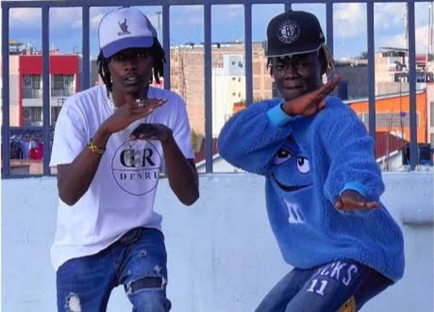

New dance in town
video source:Kenyan kris
story by:Sylvia Kathoni
have you tried the dance?
New dance style, currently sweeping Tiktok and dominating dance floors across the country, has taken Kenya by storm,
with many impressed by it's simplistic moves and some disturbed by it's sinister connotations.
The dance style, which, as usual, emerged from the backstreets of Eastlands
and quickly made it's way online, is dubbed "Mapangale" - a street corruption of the Swahili word for a machete, 'Panga'.
The style involves two dancers dancing while facing each other - as they move and wiggle, they also lower themselves rhythmically, and,
while using their arms, they mimic the acts of someone cutting up their dance partner with a panga.
One can also pull off the dance by themselves;
you only need to adhere to the up and down motions as you pretend to cut yourself up, right from the neck, down to the shoulders and around the torso.
Videos of the dance style flooded Tiktok over the weekend, with some of the biggest names on Kenyan Tiktok
jumping on the fad and helping propel it's irrepressible notoriety.

According to official records from Tiktok, the sound behind the dance style was invented by popular Reggae MC Zendiambo,
who, in a snippet of the song to which dancers are participating, can be heard saying, "Mapangale... Mapangale..." repeatedly.
Some content creators on Tiktok have now even gone a step further and are using an actual panga to demonstrate their dance styles -
some are recording videos of themselves dancing to the song in supermarkets, where they're seen brandishing brand new pangas picked up from the store's shelves.
video source:Malenge Tv
Various big names in the Tiktok dance community have already started sharing videos of themselves doing the challenge.
Popular dance influencer Kabuda as well as comedians Mulamwah, Terence Creative and DJ Shiti have also been captured in videos enjoying the dance.
Kenyans on X have also welcomed the dance - albeit with differing opinions.
While some feel like Kenyans badly needed a new dance style (the last popular one was 'Anguka Nayo' several months ago)
some others have found the style morbidly disturbing as it involves the acts of 'cutting yourself or someone up' with a panga.
Those against the dance style have pointed out the proliferation of femicide cases across the country, with many expressing their unease at enjoying a dance which reminds them of killings and brutal murders.
"A woman is getting killed almost each day in Kenya and the youth are now blindly dancing along to a sound called 'Mapangale' while also pretending to cut up anyone around the dance floor. Isn't that disturbing?
I shudder at what this dance could encourage people to do!" Mary Wanjau, an X user, said.
LEAVE A COMMENT